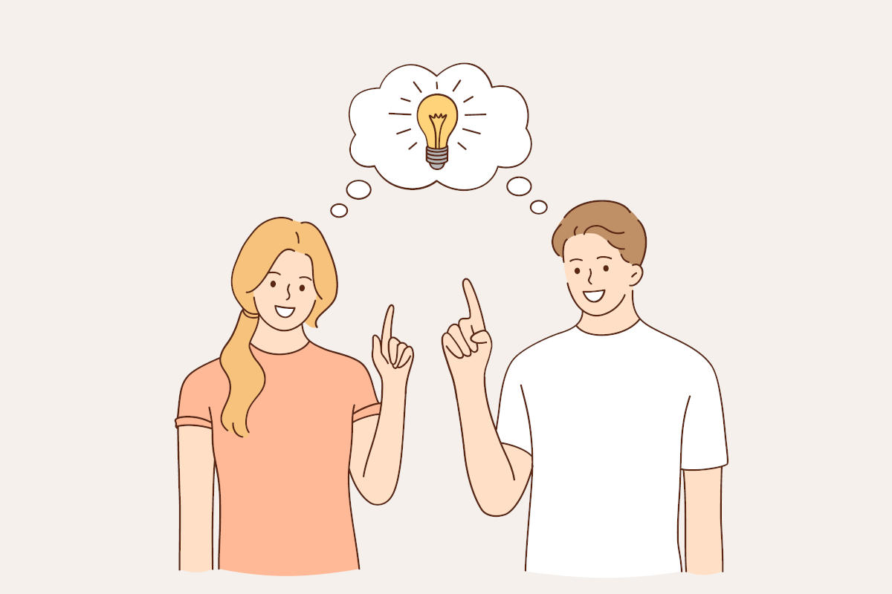

Para dar solución a un problema o necesidad es fundamental poner en marcha toda nuestra creatividad y emplear diferentes técnicas. Hay que tener en cuenta que normalmente no existe una única solución sino que hay muchas posibles, cada una con sus ventajas e inconvenientes que deberán ser evaluadas para elegir finalmente la más adecuada a nuestra situación particular.
La creatividad, denominada también pensamiento original, pensamiento creativo, inventiva, imaginación constructiva o pensamiento divergente, es la capacidad de crear, de innovar, de generar nuevas ideas o conceptos, o nuevas asociaciones entre ideas y conceptos conocidos, que normalmente llevan a conclusiones nuevas, resuelven problemas y producen soluciones originales y valiosas. La creatividad es la producción de una idea o un concepto, una creación o un descubrimiento que es nuevo, original, útil y que satisface tanto a su creador como a otros durante algún periodo.
La creatividad o el pensamiento original, es un proceso mental que nace de la imaginación. Aunque existen individuos altamente creativos y otros relativamente no creativos, todos nacemos con una capacidad creativa que luego puede ser estimulada o no. Por tanto, la creatividad puede ser desarrollada y mejorada, como pueden serlo también todas las capacidades humanas.
Las características que definen un pensamiento creativo son:
- Fluidez. Facilidad para generar un número elevado de ideas respecto a un tema determinado. Como por ejemplo nombrar en un minuto objetos que tengan algo circular. Palabras que empiecen por una determinada letra, etc.
- Flexibilidad. La persona es capaz de abandonar sin problema formas de pensar adquiridas y adoptar nuevas. Por ejemplo: puede producir gran variedad de ideas, como en el popular ejercicio de “usos para un objeto común”. Así, al sugerir los posibles usos de un ladrillo, la persona logra saltar de una categoría a otra: material de construcción, tope para puerta, proyectil, fuente de polvo rojo, etc.
- Originalidad. Característica que define a la idea, proceso o producto, como algo único o diferente. Producción de ideas ingeniosas o infrecuentes. Ejemplo: nuevos sabores en chicles, patatas, etc.
- Elaboración. Es el nivel de detalle, desarrollo o complejidad de las ideas creativas.
- Viabilidad. Capacidad de producir ideas y soluciones que sean realizables en la práctica (a veces una solución no es viable en un determinado momento, pero en un futuro sí).
Algunas estrategias que fomentan la creatividad son:
- Investigación de soluciones que se han adoptado a problemas similares. A lo largo de la historia muchos problemas se repiten, con lo que muchas veces se pueden investigar las soluciones que se dieron en cada momento y lugar.
- Lluvia de ideas. Es una técnica grupal, recomendable para grupos de entre 6 y 12 personas, que tiene como objetivo conseguir que todos los miembros de un equipo expresen sus ideas libremente, prescindiendo de espíritu crítico. Al principio, prima la cantidad sobre la calidad, cualquier idea será aceptada para que el pensamiento siga fluyendo con confianza, cuantas más ideas haya más probabilidades de que alguna sea adecuada. Cuando todas las ideas se hayan manifestado se clasifican y se eligen las más adecuadas. Una clasificación podría ser en tres columnas: columna HOW (ideas originales pero difíciles de implementar), columna NOW (ideas que se pueden implementar pero no son muy originales) y columna WOW (ideas originales, adecuadas y fáciles de implementar).
- LLuvia de ideas inversa. Sirve para desbloquear cuando no se nos ocurre nada más. Se trata de proponer la idea al revés: ¿cómo podemos hacer que el problema se extienda o triunfe? Las respuestas pueden generar un poco de caos, pero seguro que se aprende algo al identificar claramente los puntos que agrandan el problema, se trata entonces de hacer todo lo contrario.
- Planteamiento de problemas con múltiples soluciones. Se plantean problemas que pueden ser resueltos con más de una solución, lo que permite que todas sean correctas sin coincidir en los mismos pasos. Ejemplo: en un partido de fútbol se han marcado 9 goles, ¿cuál es el resultado?
- Planteamiento de problemas con unas condiciones determinadas. Consiste en plantear problemas pero condicionados con unas premisas, las cuales, aún cumpliéndose, permiten que se den soluciones distintas. Ejemplo: construcción de estructuras de barras de papel con unas determinadas condiciones.
- Mapas mentales. Se trata de crear una representación gráfica de un tema, idea o concepto, plasmado en una hoja de papel de la forma más visual posible: utilizando palabras clave, diferentes lápices o rotuladores de colores, flechas, dibujos sencillos, etc.
- Seis sombreros de pensar. Utiliza la metáfora de ponerse o quitarse sombreros de diferentes colores: blanco, rojo, negro, amarillo, verde y azul. Cada color representa una actitud que debemos tomar y defender cuando nos colocamos en la cabeza, imaginaria o realmente, ese sombrero. Ofrece a cada participante la oportunidad de adoptar distintos puntos de vista y roles de pensamiento, cada vez que se “quita un sombrero” y se “coloca” otro.
En Tecnología, es muy habitual enfrentarse a problemas técnicos. Debemos identificarlos, delimitarlos y buscar remedios, procedimientos o medios que nos sirvan para solucionarlos. Pero, ¿cómo puede hacerse de manera creativa? Algunas buenas ideas pueden ser:
- PREPARA TU MENTE. Estamos rodeados de montones de ideas, para apreciarlas debemos estar “maduros”, receptivos. Cuanto más centrados nos encontremos en el problema, más posibilidades tiene nuestra mente de estar preparada para generar ideas.
- COSA DE NIÑOS. Si intentas encontrar un enfoque simplificado para una situación compleja, piensa en cómo se lo explicarías a un niño de forma que él lo entendiera. Descríbelo en un párrafo corto. Después, reduce ese párrafo en una frase de 10 palabras. Después en tres.
- EMPIEZA POR EL FINAL. Imagina que ya lo has logrado. ¿Cómo has llegado hasta ahí? ¿Cuál fue el paso final? ¿Y el anterior? Al desandar el trayecto puedes crear un plan para llegar a tu destino.
- BUSCANDO VÍNCULOS. Si te encuentras ante una situación nueva que no guarda relación con nada de lo que has hecho anteriormente, esta técnica está hecha para ti. Primero describe el problema que intentas resolver, por ejemplo “mis hermanos no ayudan en las tareas domésticas”. Después, conviértelo en un problema general “cómo hacer que los hermanos (o las personas en general) hagan algo que no quieren”. Piensa en otras situaciones donde haya surgido ese problema general “conseguir que la gente haga algo que no le apetece” se aplica a muchas situaciones, por ejemplo, pedir a los conductores que limiten la velocidad, o que las personas en general donen sangre. Para lograr que las personas donen sangre se puede mostrar lo beneficioso que resulta para la sociedad y para ellas mismas, del mismo modo, le podemos indicar a nuestros hermanos los beneficios de mantener la casa ordenada: más facilidad para encontrar las cosas, …
- UNA NUEVA PERSPECTIVA. Si te encuentras con “el problema de siempre” pregúntate qué es diferente esta vez. Como decía Einstein: “Si siempre haces lo mismo, siempre conseguirás lo mismo”. Un pequeño cambio puede ayudar a romper esa pauta.
- TÉCNICA DEL ¿POR QUÉ? En ocasiones nos quedamos atrapados en un problema planteado de forma errónea, esta técnica nos ayuda a llegar al fondo del asunto. Esta es una técnica consiste en plantear la pregunta ¿por qué? sucesivamente hasta llegar a la raíz del problema.
- PREGUNTAS DE GUERRILLA. Además del ¿por qué? ya mencionado, una manera de entender la situación y empezar a trabajar en su resolución es haciendo uso de las preguntas: ¿quién forma parte del problema?, ¿cuál es el problema?, ¿de qué podría prescindir?, ¿qué podría ayudarme?, ¿dónde lo resolveré?, ¿en qué otro lugar podría resolverlo?, ¿cómo voy a abordar el problema?, ¿hay otra forma de hacerlo?,…
- BUSCA INSPIRACIÓN. Las personas a las que admiramos por su “saber hacer” pueden ser una gran fuente de inspiración; pensar ¿cómo lo habría hecho X?, puede ser una palanca para la creatividad.
- TIENTA A LA SERENDIPIA. La serendipia es una “casualidad favorable”, un hallazgo inesperado que se produce cuando se está buscando otra cosa distinta. En la historia de la ciencia son frecuentes las serendipias. Por ejemplo, Albert Einstein reconoce su existencia en algunos de sus hallazgos. No se puede forzar su aparición, pero sí es posible aumentar su probabilidad al probar cosas nuevas.
El pensamiento creativo tiene relación con las ideas, pero también es una actitud, sus elementos más importantes son el optimismo y un enfoque libre de prejuicios.